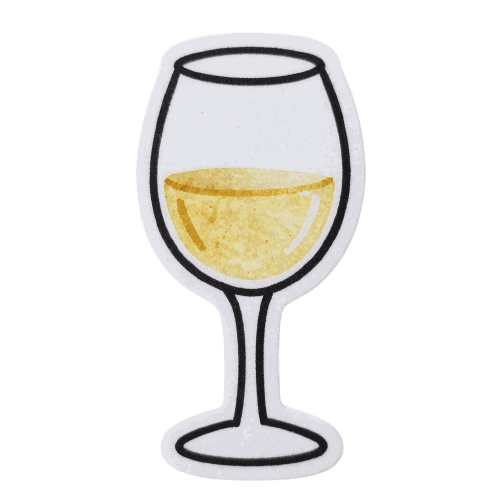
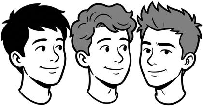

I 50% der Einnahmen gehen an den Elternverein HAK

Danke an unsere Unterstützer & Partner

Das Schülerspecial
Drei Schüler, eine Diplomarbeit und ein Abend, der bleibt: Musik, Pizza und Sonnenuntergang am Tabor.
I 50% der Einnahmen gehen an den Elternverein HAK

Danke an unsere Unterstützer & Partner

Drei Schüler, eine Diplomarbeit und ein Abend, der bleibt: Musik, Pizza und Sonnenuntergang am Tabor.